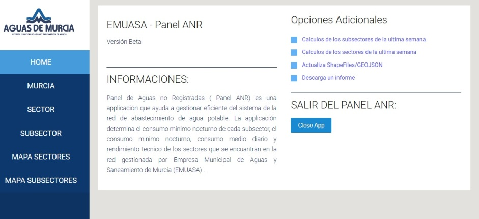

Developing an application for Active Leakage Control
Throughout my 10 month internship at EMUASA company, I was given the opportunity to see firsthand what it takes to mange water supply system while also modeling a water network using EPANET. I was able to use that knowledge to develop an application in order to automate the leak detecting by checking the flow lectures.
My role:
Devolped Python WebApplication that will be use as a support to detect a leak. The idea is to run the app every morning to compare the night flow meters lectures and detect possible changes.

WebApplication interface
In order to accomplish the task the fallowing steps were taken:
1. Pretreatment and cleaning analog, digital flow data from database (SCADA)
2. Resampling data
3. Calculate balance between flow meters if it is needed
4. Compare flow data with night water consumption (water billed)
5. Displaying results on a map and generate a report with possible locations of a leakage
Example of a leafleft map
Outcome:
The Python Web application was developed in order to detect a leak in the city water supply network in Murcia. The EMUASA is using this tool to support daily flow lectures supervising.
Example chart of a technical performance of water distribution network